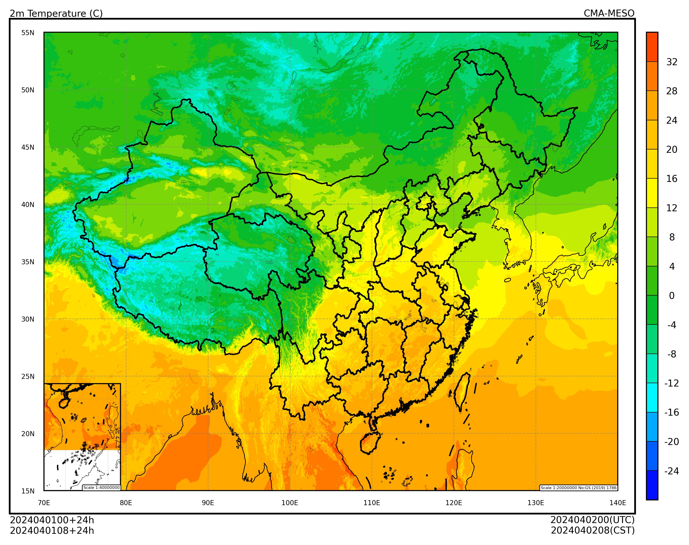

earthkit-data#
本节介绍如何使用 earthkit-data 加载 GRIB2 要素场，并使用 cedarkit-maps 绘图。
安装#
使用 conda 安装 earthkit-data
conda install -c conda-forge earthkit-data
准备#
导入需要的包
import xarray as xr
import pandas as pd
import earthkit.data
设置绘图的数据参数，使用 CMA-MESO 2024 年 4 月 1 日 00 时次 024 时效数据。
system_name = "CMA-MESO"
data_type = "cma_meso_3km/grib2/orig"
start_time = pd.to_datetime("2024-04-01 00:00:00")
forecast_time = pd.to_timedelta("24h")
加载数据#
设置 GRIB2 数据文件路径
注：可以使用 reki 库查找本地文件路径
file_path = '/g3/COMMONDATA/OPER/CEMC/MESO_3KM/Prod-grib/2024040100/ORIG/rmf.hgra.2024040100024.grb2'
file_path
'/g3/COMMONDATA/OPER/CEMC/MESO_3KM/Prod-grib/2024040100/ORIG/rmf.hgra.2024040100024.grb2'
注：可以使用 reki 库查找本地文件路径
Show code cell source
from reki.data_finder import find_local_file
file_path_use_reki = find_local_file(
data_type,
start_time=start_time,
forecast_time=forecast_time,
)
file_path_use_reki
Show code cell output
PosixPath('/g3/COMMONDATA/OPER/CEMC/MESO_3KM/Prod-grib/2024040100/ORIG/rmf.hgra.2024040100024.grb2')
使用 earthkit.data 加载 2 米温度要素场。
ds = earthkit.data.from_source("file", file_path).sel(param="2t")
ds.ls()
| centre | shortName | typeOfLevel | level | dataDate | dataTime | stepRange | dataType | number | gridType | |
|---|---|---|---|---|---|---|---|---|---|---|
| 0 | babj | 2t | heightAboveGround | 2 | 20240401 | 0 | 24 | fc | None | regular_ll |
转为 xarray.DataArray 对象
t_2m_field_full_dim = ds.to_xarray()["t2m"] - 273.15
t_2m_field_full_dim
<xarray.DataArray 't2m' (time: 1, step: 1, heightAboveGround: 1,
latitude: 1671, longitude: 2501)> Size: 17MB
array([[[[[-0.7192993 , -0.75930786, -0.80929565, ..., -4.1693115 ,
-2.879303 , -2.95932 ],
[-3.6593018 , -3.6693115 , -2.2792969 , ..., -6.9193115 ,
-6.3193054 , -3.729309 ],
[-3.5493164 , -3.589325 , -0.85931396, ..., -7.609314 ,
-7.479309 , -3.4393005 ],
...,
[26.600677 , 26.600677 , 26.590698 , ..., 25.80069 ,
25.79068 , 25.970703 ],
[26.590698 , 26.600677 , 26.590698 , ..., 25.7807 ,
25.7807 , 26.000702 ],
[26.590698 , 26.590698 , 26.600677 , ..., 25.7807 ,
25.79068 , 25.970703 ]]]]], dtype=float32)
Coordinates:
* time (time) datetime64[ns] 8B 2024-04-01
* step (step) timedelta64[ns] 8B 1 days
* heightAboveGround (heightAboveGround) float64 8B 2.0
* latitude (latitude) float64 13kB 60.1 60.07 60.04 ... 10.03 10.0
* longitude (longitude) float64 20kB 70.0 70.03 70.06 ... 145.0 145.0
valid_time (time, step) datetime64[ns] 8B ...删掉不用的坐标维度 (time, step, heightAboveGround)
t_2m_field = t_2m_field_full_dim.squeeze(dim=("time", "step", "heightAboveGround"))
t_2m_field
<xarray.DataArray 't2m' (latitude: 1671, longitude: 2501)> Size: 17MB
array([[-0.7192993 , -0.75930786, -0.80929565, ..., -4.1693115 ,
-2.879303 , -2.95932 ],
[-3.6593018 , -3.6693115 , -2.2792969 , ..., -6.9193115 ,
-6.3193054 , -3.729309 ],
[-3.5493164 , -3.589325 , -0.85931396, ..., -7.609314 ,
-7.479309 , -3.4393005 ],
...,
[26.600677 , 26.600677 , 26.590698 , ..., 25.80069 ,
25.79068 , 25.970703 ],
[26.590698 , 26.600677 , 26.590698 , ..., 25.7807 ,
25.7807 , 26.000702 ],
[26.590698 , 26.590698 , 26.600677 , ..., 25.7807 ,
25.79068 , 25.970703 ]], dtype=float32)
Coordinates:
time datetime64[ns] 8B 2024-04-01
step timedelta64[ns] 8B 1 days
heightAboveGround float64 8B 2.0
* latitude (latitude) float64 13kB 60.1 60.07 60.04 ... 10.03 10.0
* longitude (longitude) float64 20kB 70.0 70.03 70.06 ... 145.0 145.0
valid_time datetime64[ns] 8B ...绘图#
使用 cedarkit-maps 绘制 2 米温度填充图
Show code cell source
from cedarkit.maps.style import ContourStyle
from cedarkit.maps.chart import Panel
from cedarkit.maps.domains import EastAsiaMapDomain
from cedarkit.maps.colormap import get_ncl_colormap
t_2m_level = [-24, -20, -16, -12, -8, -4, 0, 4, 8, 12, 16, 20, 24, 28, 32]
color_index = [2, 12, 22, 32, 42, 52, 62, 72, 82, 92, 102, 112, 122, 132, 142, 152]
t_2m_color_map = get_ncl_colormap("BlAqGrYeOrReVi200", index=color_index)
t_2m_style = ContourStyle(
colors=t_2m_color_map,
levels=t_2m_level,
fill=True,
)
domain = EastAsiaMapDomain()
panel = Panel(domain=domain)
panel.plot(t_2m_field, style=t_2m_style)
domain.set_title(
panel=panel,
graph_name="2m Temperature (C)",
system_name=system_name,
start_time=start_time,
forecast_time=forecast_time,
)
domain.add_colorbar(panel=panel, style=t_2m_style)
panel.show()
